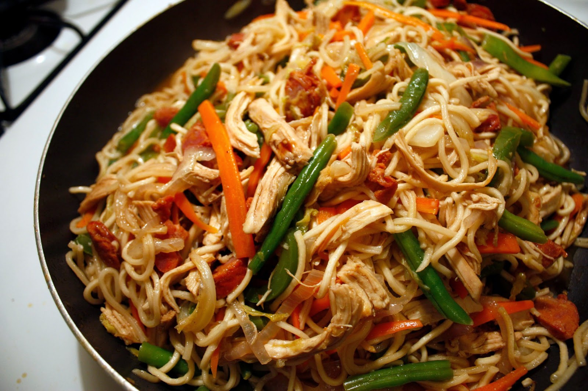

Back
Pancit Canton

Ingredients
Instructions
Nutrition Information Calories: 404kcal (20%) Carbohydrates: 55g (18%)
Protein: 17g (34%) Fat: 13g (20%) Saturated Fat: 3g (15%) Polyunsaturated Fat: 3g
Monounsaturated Fat: 7g Trans Fat: 0.1g Cholesterol: 68mg (23%) Sodium: 1082mg (45%)
Potassium: 596mg (17%) Fiber: 6g (24%) Sugar:
8g (9%) Vitamin A: 4075IU (82%) Vitamin C: 83mg (101%) Calcium: 95mg (10%) Iron: 3mg (17%)